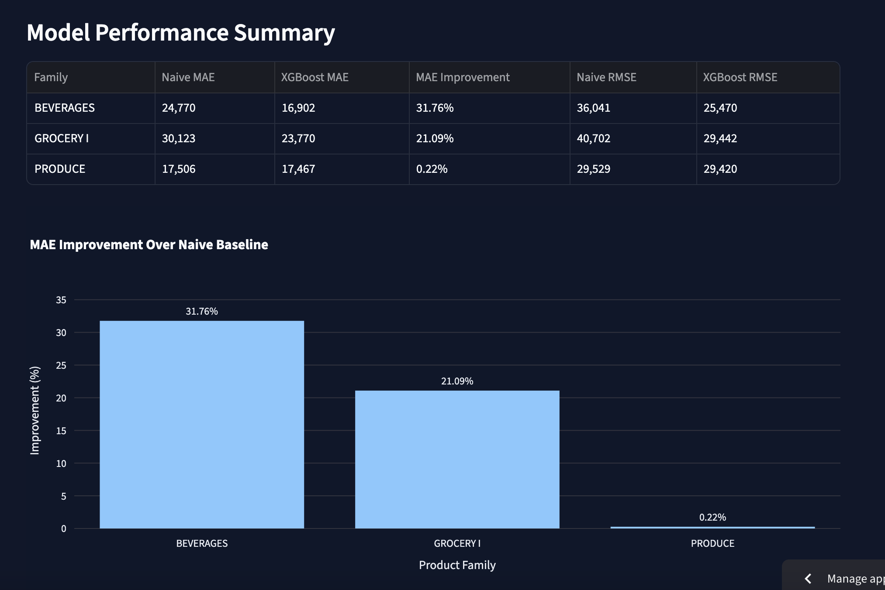
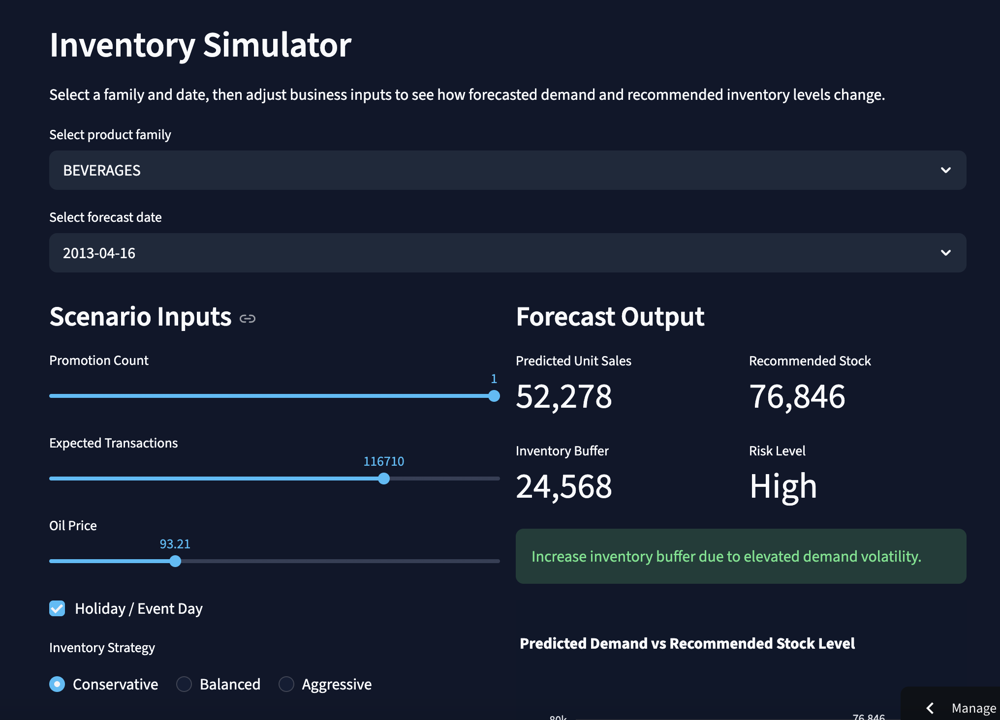
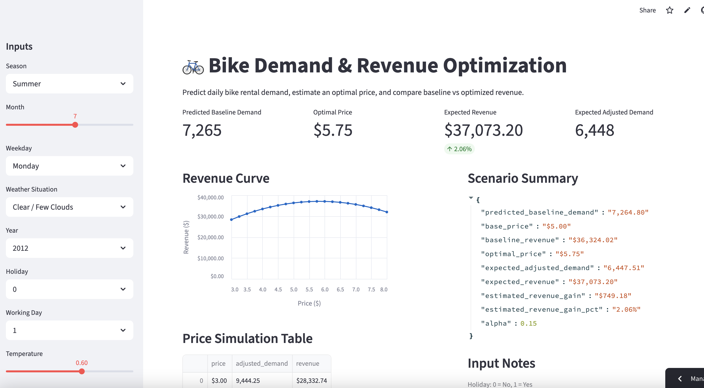

Roshan Moazed
Applied Mathematics MS Student @ Northeastern | Data Science and Machine Learning
About
I am a Master's student in the Applied Mathematics program at Northeastern University graduating in May, 2027. I have experience building machine learning systems for real-world applications and am particularly interested in retail and e-commerce. I am especially drawn to problems involving customer behavior, personalization, recommendation systems, forecasting, and business decision tools.
Featured Projects
Note: Some apps may take a few seconds to load or require reactivation if they have been inactive.
Retail Demand Forecasting & Inventory Optimization Dashboard
Built an end-to-end retail demand forecasting system using the Favorita grocery sales dataset. The project compares XGBoost models against naive time-series baselines, engineers lag and rolling-window features, and translates forecasts into inventory recommendations through an interactive Streamlit dashboard.
The dashboard includes a forecasting command center, actual-vs-predicted sales visualizations, product-family comparisons, feature importance analysis, and an inventory simulator that adjusts recommendations based on volatility and business risk.
App Preview


E-Commerce Recommender System
Built an end-to-end recommendation system using real e-commerce interaction data. Compared popularity-based simple and weighted recommendations with item-based collaborative filtering and deployed the final system in an interactive Streamlit dashboard. The collaborative filtering model improved Hit Rate at 10 by about 4.3x over the baseline.
App Preview


Projects
Note: Some apps may take a few seconds to load or require reactivation if they have been inactive.
Customer Segmentation and Targeted Marketing
Developed a customer segmentation system using retail transaction data to group customers into distinct behavioral segments. Built an interactive dashboard to explore segment characteristics and simulate how different targeting strategies could influence revenue and marketing impact.
App Preview


Bike Demand and Pricing Optimization
Built a machine learning pipeline to predict bike rental demand and extended it into a pricing optimization framework using adjusted demand, elasticity and a baseline price. Created a Streamlit app to simulate pricing scenarios, estimate revenue impact, and show how pricing decisions interact with predicted demand.
App Preview

Brain Hemorrhage Segmentation and Classification
Built a computer vision pipeline for brain hemorrhage image segmentation and classification using multi-view medical imaging data. This project involved intensive preprocessing, image-based modeling such as U-Net and ResU-Net models, and deployment through an interactive Streamlit app, and is one of my most technically intensive machine learning projects.
App Preview

Skills
scikit-learn, XGBoost, Recommendation Systems, Time Series Forecasting, Computer Vision, NLP, LLMs, Text Embeddings
Data Preprocessing, Feature Engineering, Model Evaluation, Forecast Evaluation, Customer Analytics, Retail Analytics
Python, pandas, NumPy, Streamlit, Plotly, Data Visualization, GitHub
Vector Databases, OpenAI API, Business Simulation, Dashboard Development